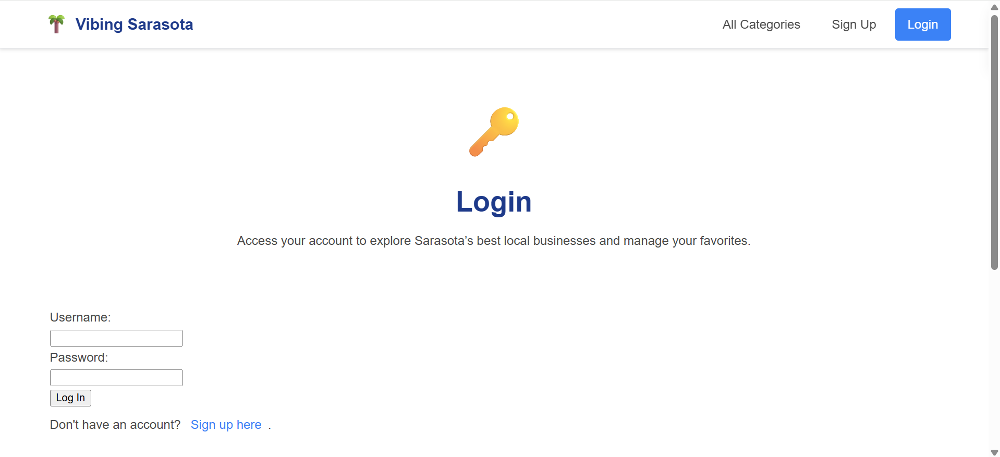
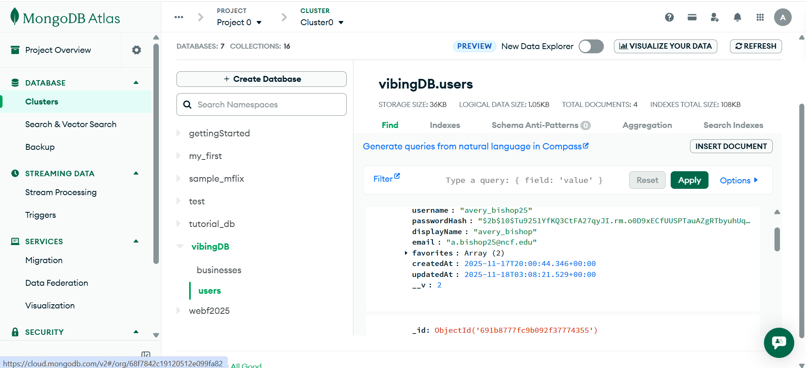

Screenshots & Project Evidence
Below are screenshots demonstrating my contributions to the project.
Signup Page

Login Page
MongoDB Database
Browser Console

This project is based on the original Vibing Sarasota web application that my instructor provided. I was responsible for taking that starter code and expanding it into a full-stack final project with working authentication, a MongoDB database, user-specific favoriting logic, and overall improvements to the site's performance and usability.
My additions included creating the signup and login system, storing user sessions in browser localStorage, connecting the app to MongoDB, building the favorites feature, and improving the site structure so users can navigate and interact with the content more smoothly. I also added minor optimization improvements such as better mobile layout and removing unnecessary console errors.
Below are screenshots demonstrating my contributions to the project.
This portfolio page is part of my final submission for the Web Development course. My role was to build functional backend logic, connect the site to a database, and implement user authentication while keeping the original site’s style and purpose intact. These screenshots and descriptions represent the work I personally completed over the course of the project.